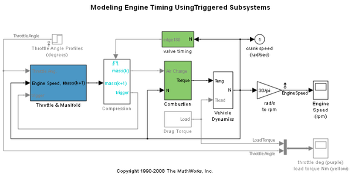
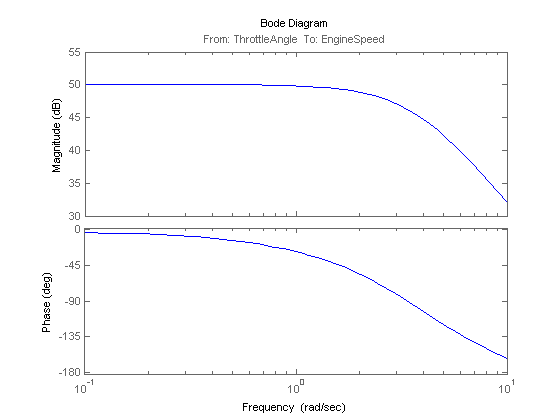
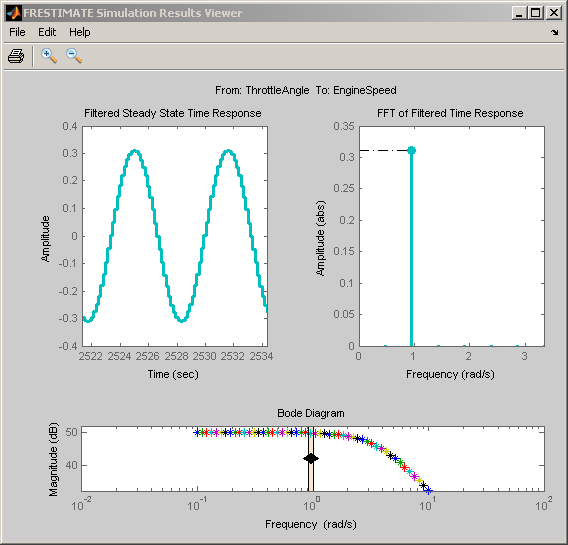
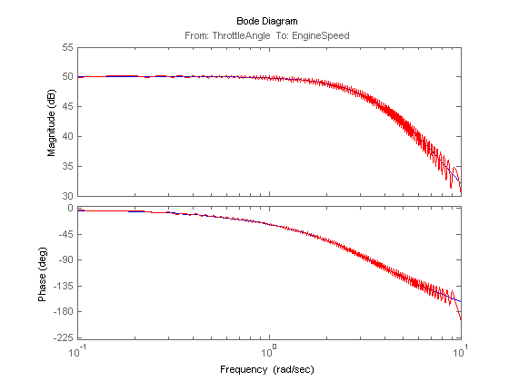

Frequency Response Estimation Using Simulation-Based Techniques
This demo illustrates how to obtain the frequency response of Simulink® models when analytical block-by-block linearization does not provide accurate answer due to event-based dynamics in the linearization path. Examples of such systems are models with triggered subsystems or models using Pulse Width Modulation(PWM) input signals.
Contents
Step 1: Opening the Model
Open the Simulink® model for engine timing. Note that analytical block-by-block linearization of this model from throttle angle to engine speed gives a linearization result of zero due to the triggered subsystem "Compression" in the linearization path.
scdengine
mdl = 'scdengine';
io = getlinio(mdl);
linsys = linearize(mdl,io)
d =
ThrottleAngl
EngineSpeed 0
Static gain.
 Step 2: Estimating Frequency Response Using Sinestream Input Signal
Sinestream input signal is the most reliable input signal for estimating an accurate frequency response of a Simulink® model using FRESTIMATE. It is a signal that is composed of individual sinusoidal signals that are appended to the end of each other. FRESTIMATE command simulates the model for each frequency in the sinestream input signal, specified in "Frequency" parameter, for the corresponding amount of periods, specified in "NumPeriods" parameter. After the simulation, FRESTIMATE uses the output signal to compute the response at each frequency. Note that FRESTIMATE uses only the periods after the system reaches to steady state for that input frequency, specified in "SettlingPeriods" parameter. Create a sinestream signal with logarithmically-spaced distinct frequencies between 0.1 and 10 rad/s:
in = frest.Sinestream('Frequency',logspace(-1,1,50),'Amplitude',1e-3)
The sinestream input signal:
Frequency : [0.1 0.10985 0.12068 0.13257 ...] (rad/s)
Amplitude : 0.001
SamplesPerPeriod : 40
NumPeriods : 4
RampPeriods : 0
FreqUnits (rad/s,Hz): rad/s
SettlingPeriods : 1
ApplyFilteringInFRESTIMATE (on/off) : on
SimulationOrder (Sequential/OneAtATime): Sequential
Note that by default, each frequency in sinestream input signal is simulated for 4 periods, i.e. "NumPeriods" is 4 for all frequencies, and the end of first period is specified to be where the system reaches to steady state, i.e. "SettlingPeriods" is 1 for all frequencies, thus FRESTIMATE uses the last 3 periods of the output signals.
Using this sinestream input signal, perform the frequency response estimation using FRESTIMATE command and plot the resulting frequency response data:
[sys,simout] = frestimate(mdl,io,in); bode(sys)
You can inspect the estimation results using the FRESTIMATE Simulation Results Viewer. The viewer shows time-domain and frequency-domain simulation results for the selected frequency(s) and a summary bode plot where you can interactively switch between frequencies. The frequencies of the sinestream signal are color-coded in all plots.
frest.simView(simout,in,sys);
You can use the viewer as a tool to diagnose issues. Examples of issues that impact the accuracy of the frequency response estimation include:
- Not reaching steady state
- Excitation of nonlinearities
- Running into instabilities
Step 3: Estimating Frequency Response Using Chirp Input Signal
Another input signal you can use when estimating frequency response data from a Simulink® model is frequency chirp. Frequency chirp differs from sinestream in that the frequency is instantenously varied.
You can use chirp input signals to obtain quicker frequency response estimation. However, the frequency estimation results obtained with chirp input could be less reliable than the ones obtained with sinestream input because each frequency is not simulated long enough to drive the system to steady state at that frequency. Create a chirp signal that sweeps between the frequencies 0.1 and 10 rad/s logarithmically:
in_chirp = frest.Chirp('FreqRange',[0.1 10],'Amplitude',1e-3,... 'SweepMethod','logarithmic','NumSamples',3000);
Using the chirp signal, perform the frequency response estimation:
sys_chirp = frestimate(mdl,io,in_chirp);
Plot the results obtained with sinestream and chirp input signals together:
bode(sys,sys_chirp,'r')
 Close the model:
bdclose('scdengine');